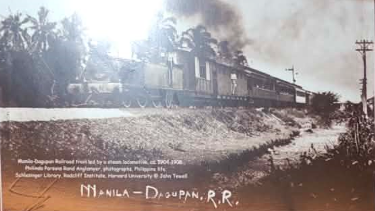
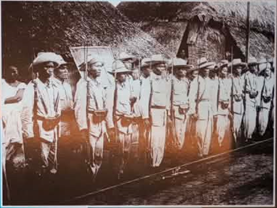
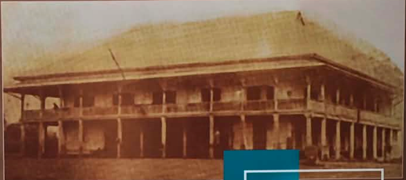
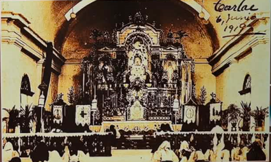
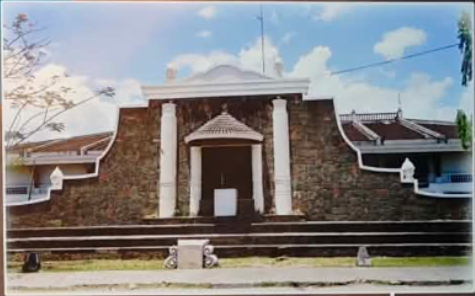
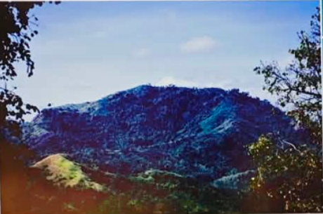
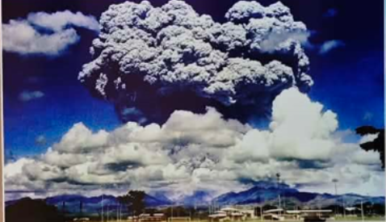
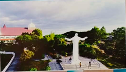
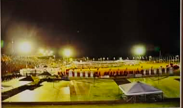
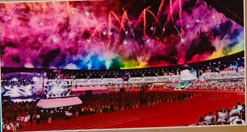

Tarlac History Diorama
Step into the past and witness the rich historical tapestry of Tarlac
The Living History of Tarlac
The Tarlac History Diorama is an immersive journey through time, showcasing the pivotal moments that shaped the province into what it is today. From its pre-colonial roots to its role in the Philippine Revolution, each exhibit tells a story of resilience, culture, and progress.
This carefully curated collection features detailed miniature scenes, authentic artifacts, and interactive displays that bring to life the significant events and figures that defined Tarlac's unique identity as the "Melting Pot of Central Luzon."
Walk through centuries of history in a single visit, experiencing the convergence of Kapampangan, Ilocano, and Pangasinense cultures that created Tarlac's distinctive heritage.


Historical Timeline of Tarlac
Origin of the Name "Tarlac"
An old Spanish Tagalog Dictionary by Pedro Serrano Laktaw in the late 1800s referred to 'Tarlac' as native sugar cane. Early documents referred to the place as a marshland rather than a plant, which is more feasible as it had its application in other parts of the Philippines.
Spanish Evangelization Period
Even with the initialization of the period of evangelization and reduccion of Pampanga in 1571 and Pangasinan a couple of years later, however, most of what was to become the province of central portion, was for at least two centuries depicted as thickly-forested hinterland, peopled by roving tribes of Aetas.

Comandancia Politico-Militar de Tarlac
The first step towards the erection of Tarlac into a province was made in 1858, with the creation of the Comandancia Politico-Militar de Tarlac. Based on the actual law, when the Commandancia de Armas de Tarlac (another term for Commandancia Politico-Militar de Tarlac) was conceived in 1857, with the appointment of Capt. Sebastian Hernandez as the first Comandante and the Royal Decree that credited it on 30 August 1858, it was already the formation of the territory that compromised almost in its entirety what was then and still now the Tarlac Province.

Gobierno de Tarlac Established
The Gobierno de Tarlac was created, with Don Antonio Rodriguez Batista serving as the first civil governor.

Tarlac in the Philippine Revolution
Tarlac was included among the eight revolting provinces by Governor-General Ramon Blanco, immortalized as among the eight rays of the sun in the Philippine flag.

Macabulos Revolutionary Activities
January 24, 1897: The so-called 'First City of Tarlac' initiated by General Francisco S. Macabulos in La Paz.
April 17, 1898: General Francisco Macabulos installed the Central Comite Directivo del Centro Y Norte de Luzon, with headquarters at Lomboy, La Paz, Tarlac; with its own constitution, the so called 'Macabulos Constitution'.
Aguinaldo's Capital in Tarlac
President Emilio Aguinaldo transferred his capital at Bamban, Tarlac, assuming the position of Captain-General. By June 21, he relocated at the Tarlac cabecera.

Tarlac as Educational and Political Center
July 14, 1899: The Congress of the First Philippine Republic was reconvened at the Tarlac Cathedral with Ambrosio Rianzares Bautista as the President.
August 8, 1899: The Universidad Literaria de Filipinas was reopened in Tarlac, with Dr. Leon Ma Guerrero as its Rector. On September 29, 1899, it held its first and only graduation ceremony.

Paniqui Assembly
Msgr. Gregorio Aglipay convened the so-called Paniqui Assembly, marking the seed of what would become the Philippine Independent Church.
First Tarlaquena Beauty Queen
Tarlac native, Maria Cristina Galang won at the Philippines International Fair as Miss Philippines in 1953. The Maria Cristina Park in front of the capitol building was named after the first Tarlaquena beauty queen.
Diwa ng Tarlac Construction
The Diwa ng Tarlac was constructed by the administration of then Governor Homobono Sawit, which was set as the civic center of the province.

Creation of San Jose Municipality
Creation of the Municipality of San Jose in Western Tarlac.

Mt. Pinatubo Eruption
Mt. Pinatubo explosion where more than 800 people died mostly from collapsing roofs. And more than two million people whose houses and livehood were either damaged and/or destroyed.

Monasterio de Tarlac Eco-Tourism Park
Then Governor Jose "Aping" Yap, through former President Gloria Macapagal Arroyo issued Proclamation number 602 "Declaring as Eco-Tourism Park and Campsite a 278 hectare land in Brgy. Lubigan and Moriones in the town of San Jose. The Eco-Tourism Park is now known for the famous Monasterio De Tarlac.

First Palarong Pambansa in Tarlac
The province of Tarlac hosted its first Palarong Pambansa at the newly constructed Tarlac Recreational Park, now known as the Jose V. Yap Sports and Recreational Complex under the administration of then Governor Victor Yap.

SEA Games Host in New Clark City
The province of Tarlac hosted its first Southeast Asian Games at the New Clark City Sports Complex in Capas, Tarlac.

Key Historical Figures

Gen. Francisco Makabulos
A key figure in the Philippine Revolution against Spain, Makabulos was a native of La Paz, Tarlac. He led revolutionary forces in Central Luzon and established a provisional government in Tarlac.

Corazon Aquino
Born in Tarlac, Aquino became the first female president of the Philippines and the first female president in Asia. Her presidency marked the restoration of democracy after the Marcos regime.

Benigno "Ninoy" Aquino Jr.
A native of Concepcion, Tarlac, Aquino was a leading opposition figure during the Marcos regime. His assassination in 1983 sparked the People Power Revolution that eventually toppled the dictatorship.
Visit the Tarlac History Diorama
Experience history come alive at the Tarlac Provincial Museum and History Diorama. Located in the heart of Tarlac City, this immersive exhibit is open to visitors of all ages.
Operating Hours
Tuesday to Sunday: 9:00 AM - 5:00 PM
Closed on holidays
Location
Diwa ng Tarlac
9 Romulo Blvd, Tarlac City, 2300 Tarlac